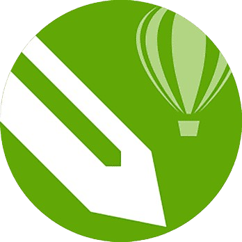

Education
SDI Nurul Huda Cikampek
(2011-2017)
SMPN 1 Jatisari
(2017-2020)
SMAN 1 Jatisari - MIPA (Matematika dan Ilmu Pengetahuan Alam).
(2020-2023)
Experience
Koordinator Acara, Graduation Ceremony SMAN 1 JATISARI (Januari, 2023 – Juni, 2023)
Tim Creative, Flsportainment
Ketua, Smanjas Futsal (Mei, 2022 – Juni, Year 2023)
my skills

Adobe Photoshop

CorelDraw

Microsoft Word

Adobe Illustrator